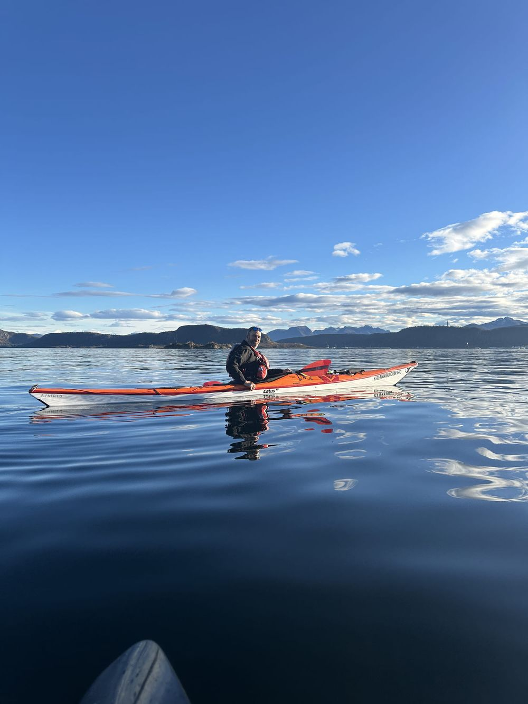
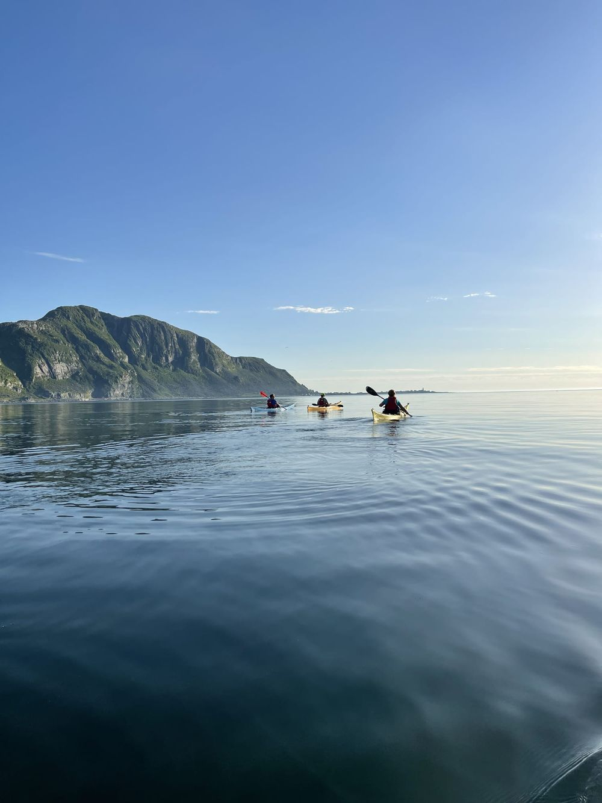
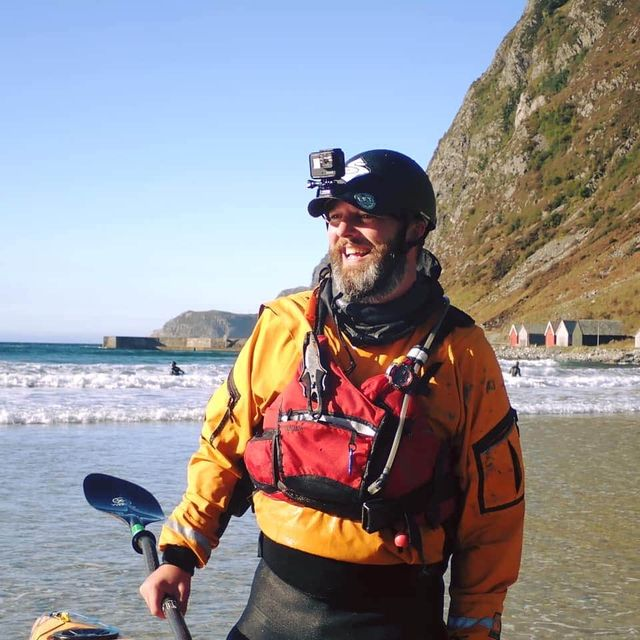

Kajakkurs og padleopplevelser i Ålesund, Giske og Sunnmøre
Fra nybegynnerkurs til avansert kystpadling. NPF-sertifisert instruktør, førsteklasses utstyr og noen av Norges vakreste padlefarvann rett utenfor døra.


Praktisk informasjon
Trygge kajakkopplevelser i fantastisk natur. Ekspertise, sikkerhet og førsteklasses utstyr på Sunnmøres vakreste kystlinje.
Populære kurs
Fra nybegynnerkurs til magiske nattopplevelser — kurs for alle nivåer i Ålesund og Giske.


Utforsk kysten
Fra rolige fjordturer til krevende kystpadling. Her finner du de beste turene i Ålesund, Giske og Sunnmøre.
Giske rundt
En klassisk rundtur rundt Giske som byr på variert padling. Du passerer den historiske Giske kirke fra sjøsiden, padler langs åpen kyst med utsikt mot havet, og kommer tilbake gjennom roligere farvann. Turen krever stabil vær og noe erfaring.
Valderøya rundt
En rolig tur i skjærgården rundt Valderøya. Perfekt for nybegynnere eller de som vil ha en avslappende padletur. Farvannet er skjermet og du padler mellom holmer og skjær med rikt fugleliv.
Ålesund sentrum fra sjøsiden
Se Ålesunds berømte jugendarkitektur fra en helt ny vinkel — fra kajakken. Du padler gjennom Brosundet, langs havnen og ut mot Skanseholmen. En unik opplevelse selv for de som kjenner byen godt.

Din instruktør, Øystein Pilskog
Jeg har padlet kajakk siden 2008, og startet Kajakkguiden i 2017. Jeg holder til på Valderøya i Giske kommune, med kurs og turer i hele Ålesund/Giske/Skodje-området. Filosofien er enkel: små grupper, høy sikkerhet og ekte lidenskap for padling.
- Lokalkjent instruktør
NPF-veileder sertifisert instruktør med over 15 års erfaring på Sunnmøre. Dyp kjennskap til farvann, strømforhold og de beste padlerutene i Ålesund og Giske.
- Sikkerhet i fokus
Maks 8 deltakere per instruktør, førsteklasses sikkerhetsutstyr og grundig opplæring. Din trygghet er alltid førsteprioritet.
- Premium utstyr
Jeg padler kun med det beste — anerkjente havkajakker fra Edge, P&H og NDK. Utstyr kan leies til en god pris.
- Fantastiske omgivelser
Fra Giskes idylliske kystlinje til Runde sin dramatiske kystlinje. Ålesund og Sunnmøre byr på noen av Norges beste padleforhold.
Hva kursdeltagerne sier
Toppkarakter fra alle: 5.0 av 5 basert på over 85 omtaler på Facebook og Google. Her er noen av dem.
Har deltatt på grunnkurs og vil anbefale Kajakkguiden på det sterkeste. God progresjon og øvelser som gjorde oss trygge og flinkere i padleteknikker og bergingsteknikker. Øystein er en veldig dyktig instruktør som brenner for padling og er flink til å dele kunnskapen.
Terje Lund — Grunnkurs, Facebook
Instruktøren Øystein har med sine eminente kunnskap og lidenskap sørget for at jeg er kajakkfrelst! Evnen hans til å SE hver kursdeltager, å ha riktig tilnærming til hvert enkelt individ er unikt. Vil ellers takke for 2 utrolige flotte dager.
Agathe Krøs Løken — Grunnkurs, Facebook
Øystein er en utrolig dyktig og inkluderende instruktør. Kjekt med en så trygg instruktør som gjorde min frykt om til en god mestringsfølelse. Flott og artig kurs med både lek og alvor. Anbefales!
Nina Lund — Grunnkurs, Facebook
Ofte stilte spørsmål
Få svar på de vanligste spørsmålene om kajakkurs, utstyr og sikkerhet.
Må jeg kunne svømme for å padle kajakk?
Ja, du må kunne svømme minst 200 meter. Dette er et krav for alle kurs og utleie. Du skal også være komfortabel i vann.
Trenger jeg å være i god fysisk form?
Du trenger ikke være topprent. Normal form holder for de fleste kurs. Jeg tilpasser tempo og innhold etter gruppen. Grunnkurs er 16 timer over to dager, så litt utholdenhet er en fordel.
Hva skjer hvis det er dårlig vær?
Sikkerhet kommer alltid først. Ved dårlig vær kan kurset bli flyttet til en annen dato. Jeg tar avgjørelsen i samråd med deg og gir beskjed så tidlig som mulig. Litt regn er sjelden et problem — vind og bølger er det jeg vurderer.
Hva må jeg ha med?
Utstyr kan leies i tillegg til kursprisen. Du trenger: ull- eller syntetisk undertøy (aldri bomull), ekstra skift til etterpå, matpakke og drikke, solkrem og solbriller. Jeg anbefaler padlesko eller sko som tåler vann.
Klar for ditt neste padleeventyr i Ålesund?
Enten du vil prøve kajakk for første gang eller ta ferdighetene til neste nivå — her finner du kurset for deg. Opplev Giske, Sunnmøre og Ålesund fra sjøsiden.